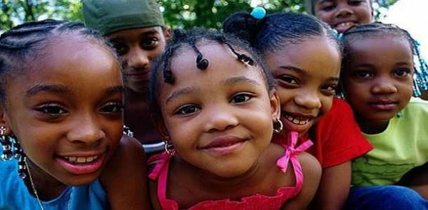

|


Dear Patrons, Friends and Donors
It is my pleasure and delight to be able to express through this medium my profound gratitude, that of the members of the board of trustees, the little children, and the missionaries, to you all for your consistent support. The vision has been proven and tested. It is established in the hearts of all who know us that it is a vision from God, therefore it will not fail because God has raised you, our patrons and donors, as co- laborers with us. We are builders and restorers of lives.
The past few years have been full of challenges, but glory to God we have surmounted everyone of them. We have come out stronger, more passionate and more determined to finish the race that God has set before us. We can never fail because God cannot fail. Our help comes from God. His GRACE is continually being multiplied and his mercies renewed in our lives. The Glory of the latter shall be greater than that of the former.
Patrons, please do not be weary of giving to the Eromosele Orphanage Home. Your giving redounds to the glory of God. The excellence of the vision, the well being of all the little children and the ever increasing prosperity in your lives is evidence that you are giving to a great and divine cause. Keep it up!
It is a delight to me and I believe it pleases God to see our young Nigerians coming to volunteer their time at the orphanage. Every year, Loyola Jesuit College, Abuja and St Francis Catholic Secondary School Idimu Lagos, send their students to render one month of voluntary service annually.
Children from nursery, primary and secondary schools in Lagos come regularly to visit the little saints and the Youth Corpers are not left out. It's a pleasant sight to behold, and we rejoice because this was one of the prayer points at the onset of the vision. That our young should be touched with the feelings of their less privileged peers, so that they can grow up to be unselfish and generous. To see this come to pass strengthens our faith in God and our Little Saints' Day slogan ' Catch the Spirit of Love, Spread the feeling' is working.
|